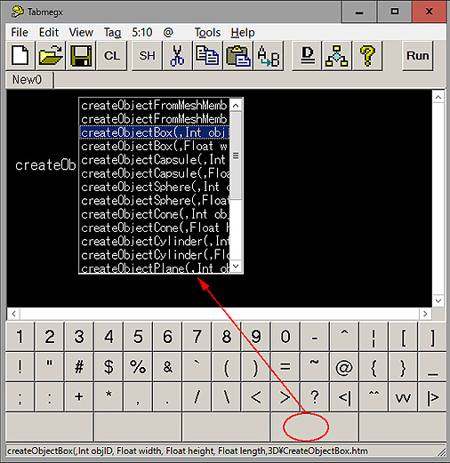

Suggestion keywords

Select the word list from [Edit]-[Word list] menu.
Press [Insert] or the blank buttons to view the word suggestion.
Press [F1] or the question button to view the help from the word.
How to addjust the suggestion window
Change the font size
Input the font size to [Suggenstion font size] in [View]-[Option] menu
Change the window position
Alt+Arrow Key... Move
F11... Decide
Change the window size
Shift+Alt+Arrow key
Back